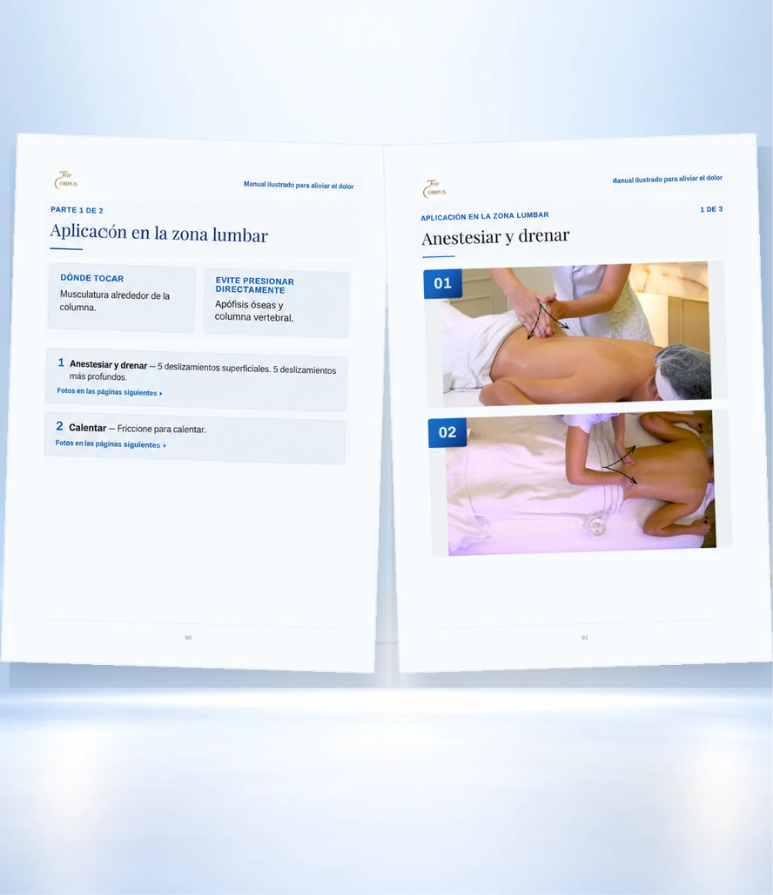

![Antes y después de la misma escena. Sin el manual: la masoterapeuta, con bata oscura, con una mano en la barbilla y la otra quieta sobre la espalda de la clienta, marcada con puntos rojos, y un video en pausa al lado; piensa “¿Será que es aquí?”, “¿Y si le empeoro el dolor?” y “Ya vi este video varias veces y todavía no sé”. Con el manual: con bata blanca, da el masaje tranquila, con los puntos ahora verdes y el manual abierto en la página de la zona lumbar; piensa “Es aquí, el dibujo lo muestra”, “Ya sé la presión correcta. Ahora lo hago tranquila” y “Ahora entendí, solo hay que seguir el dibujo”.](assets/img/hero-antes-depois.webp)

01
Más de 70 maniobras para tratar distintas regiones del cuerpo
Cada página muestra la maniobra aplicada, igual que en la foto de al lado: la región correcta y la mano en el lugar correcto, lista para que la reproduzcas con tu clienta.